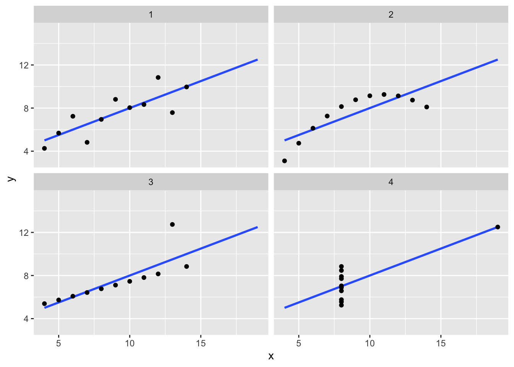
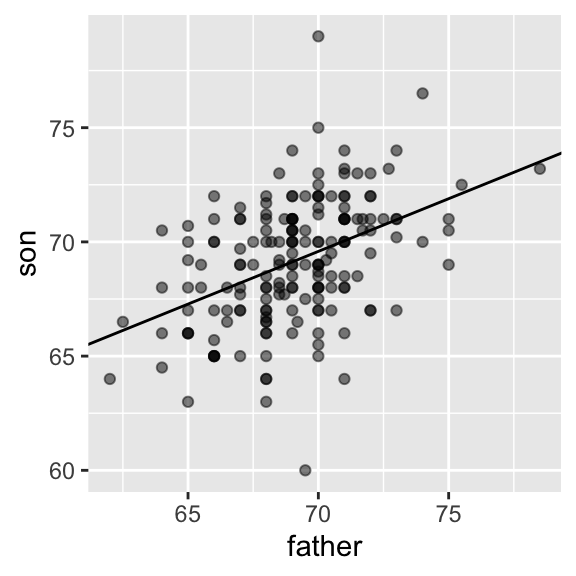

library(tidyverse)
library(HistData)
data("GaltonFamilies")
set.seed(1983)
galton_heights <- GaltonFamilies %>%
filter(gender == "male") %>%
group_by(family) %>%
sample_n(1) %>%
ungroup() %>%
select(father, childHeight) %>%
rename(son = childHeight)Foundations of Linear Regression
Required Reading
- This page.
Guiding Questions
The correlation between two variables tells us how they move together
Sample correlation is a random variable
Introduction to Linear Regression
Up to this point, this class has focused mainly on single variables. However, in data analytics applications, it is very common to be interested in the relationship between two or more variables. For instance, in the coming days we will use a data-driven approach that examines the relationship between player statistics and success to guide the building of a baseball team with a limited budget. Before delving into this more complex example, we introduce necessary concepts needed to understand regression using a simpler illustration. We actually use the dataset from which regression was born.
The example is from genetics. Francis Galton1 studied the variation and heredity of human traits. Among many other traits, Galton collected and studied height data from families to try to understand heredity. While doing this, he developed the concepts of correlation and regression, as well as a connection to pairs of data that follow a normal distribution. Of course, at the time this data was collected our knowledge of genetics was quite limited compared to what we know today. A very specific question Galton tried to answer was: how well can we predict a child’s height based on the parents’ height? The technique he developed to answer this question, regression, can also be applied to our baseball question. Regression can be applied in many other circumstances as well.
Historical note: Galton made important contributions to statistics and genetics, but he was also one of the first proponents of eugenics, a scientifically flawed philosophical movement favored by many biologists of Galton’s time but with horrific historical consequences. These consequences still reverberate to this day, and form the basis for much of the Western world’s racist policies. You can read more about it here: https://pged.org/history-eugenics-and-genetics/.
Case study: is height hereditary?
We have access to Galton’s family height data through the HistData package. This data contains heights on several dozen families: mothers, fathers, daughters, and sons. To imitate Galton’s analysis, we will create a dataset with the heights of fathers and a randomly selected son of each family:
In the exercises, we will look at other relationships including mothers and daughters.
Suppose we were asked to summarize the father and son data. Since both distributions are well approximated by the normal distribution, we could use the two averages and two standard deviations as summaries:
galton_heights %>%
summarize(mean(father), sd(father), mean(son), sd(son))# A tibble: 1 × 4
`mean(father)` `sd(father)` `mean(son)` `sd(son)`
<dbl> <dbl> <dbl> <dbl>
1 69.1 2.55 69.2 2.71However, this summary fails to describe an important characteristic of the data: the trend that the taller the father, the taller the son.
galton_heights %>% ggplot(aes(father, son)) +
geom_point(alpha = 0.5)
We will learn that the correlation coefficient is an informative summary of how two variables move together and then see how this can be used to predict one variable using the other.
The correlation coefficient
The correlation coefficient is defined for a list of pairs \((x_1, y_1), \dots, (x_n,y_n)\) as the average of the product of the standardized values:
\[ \rho = \frac{1}{n} \sum_{i=1}^n \left( \frac{x_i-\mu_x}{\sigma_x} \right)\left( \frac{y_i-\mu_y}{\sigma_y} \right) \] with \(\mu_x, \mu_y\) the averages of \(x_1,\dots, x_n\) and \(y_1, \dots, y_n\), respectively, and \(\sigma_x, \sigma_y\) the standard deviations. The Greek letter \(\rho\) is commonly used in statistics books to denote the correlation. The Greek letter for \(r\), \(\rho\), because it is the first letter of regression. Soon we learn about the connection between correlation and regression. We can represent the formula above with R code using:
rho <- mean(scale(x) * scale(y))To understand why this equation does in fact summarize how two variables move together, consider the \(i\)-th entry of \(x\) is \(\left( \frac{x_i-\mu_x}{\sigma_x} \right)\) SDs away from the average. Similarly, the \(y_i\) that is paired with \(x_i\), is \(\left( \frac{y_1-\mu_y}{\sigma_y} \right)\) SDs away from the average \(y\). If \(x\) and \(y\) are unrelated, the product \(\left( \frac{x_i-\mu_x}{\sigma_x} \right)\left( \frac{y_i-\mu_y}{\sigma_y} \right)\) will be positive ( \(+ \times +\) and \(- \times -\) ) as often as negative (\(+ \times -\) and \(- \times +\)) and will average out to about 0. This correlation is the average and therefore unrelated variables will have 0 correlation. If instead the quantities vary together, then we are averaging mostly positive products ( \(+ \times +\) and \(- \times -\)) and we get a positive correlation. If they vary in opposite directions, we get a negative correlation.
The correlation coefficient is always between -1 and 1. We can show this mathematically: consider that we can’t have higher correlation than when we compare a list to itself (perfect correlation) and in this case the correlation is:
\[ \rho = \frac{1}{n} \sum_{i=1}^n \left( \frac{x_i-\mu_x}{\sigma_x} \right)^2 = \frac{1}{\sigma_x^2} \frac{1}{n} \sum_{i=1}^n \left( x_i-\mu_x \right)^2 = \frac{1}{\sigma_x^2} \sigma^2_x = 1 \]
A similar derivation, but with \(x\) and its exact opposite, proves the correlation has to be bigger or equal to -1.
For other pairs, the correlation is in between -1 and 1. The correlation between father and son’s heights is about 0.5:
galton_heights %>% summarize(r = cor(father, son)) %>% pull(r)[1] 0.4334102To see what data looks like for different values of \(\rho\), here are six examples of pairs with correlations ranging from -0.9 to 0.99:
Sample correlation is a random variable
Before we continue connecting correlation to regression, let’s remind ourselves about random variability.
In most data science applications, we observe data that includes random variation. For example, in many cases, we do not observe data for the entire population of interest but rather for a random sample. As with the average and standard deviation, the sample correlation is the most commonly used estimate of the population correlation. This implies that the correlation we compute and use as a summary is a random variable.
By way of illustration, let’s assume that the 179 pairs of fathers and sons is our entire population. A less fortunate geneticist can only afford measurements from a random sample of 25 pairs. The sample correlation can be computed with:
R <- sample_n(galton_heights, 25, replace = TRUE) %>%
summarize(r = cor(father, son)) %>% pull(r)R is a random variable. We can run a Monte Carlo simulation to see its distribution:
B <- 1000
N <- 25
R <- replicate(B, {
sample_n(galton_heights, N, replace = TRUE) %>%
summarize(r=cor(father, son)) %>%
pull(r)
})
qplot(R, geom = "histogram", binwidth = 0.05, color = I("black"))We see that the expected value of R is the “population” correlation:
mean(R)[1] 0.4307393and that it has a relatively high standard error relative to the range of values R can take:
sd(R)[1] 0.1609393So, when interpreting correlations, remember that correlations derived from samples are estimates containing uncertainty.
Also, note that because the sample correlation is an average of independent draws, the central limit actually applies. Therefore, for large enough \(N\), the distribution of R is approximately normal with expected value \(\rho\). The standard deviation, which is somewhat complex to derive, is \(\sqrt{\frac{1-r^2}{N-2}}\).
In our example, \(N=25\) does not seem to be large enough to make the approximation a good one:
ggplot(aes(sample=R), data = data.frame(R)) +
stat_qq() +
geom_abline(intercept = mean(R), slope = sqrt((1-mean(R)^2)/(N-2)))
QQ plots
The above plot is called a qq plot. It compares two things: the quantiles of the numeric variable, and the quantiles that one would get from a normal distribution with the same mean and standard deviation as the numeric variable. Points on the 45 degree line indicate ranges of the data where the empirical quantile is equal to the theoretical (normal) quantile. Points off the line indicate ranges where the numeric variable is not normal. Small samples will be very noisy, but you should be able to see systematic deviations.
If you increase \(N\), you will see the distribution converging to normal.
Correlation is not always a useful summary
Correlation is not always a good summary of the relationship between two variables. The following four artificial datasets, referred to as Anscombe’s quartet, famously illustrate this point. All these pairs have a correlation of 0.82:

Correlation is only meaningful in a particular context. To help us understand when it is that correlation is meaningful as a summary statistic, we will return to the example of predicting a son’s height using his father’s height. This will help motivate and define linear regression. We start by demonstrating how correlation can be useful for prediction.
Conditional expectations
Suppose we are asked to guess the height of a randomly selected son and we don’t know his father’s height. Because the distribution of sons’ heights is approximately normal, we know the average height, 69.2, is the value with the highest proportion and would be the prediction with the highest chance of minimizing the error. But what if we are told that the father is taller than average, say 72 inches tall, do we still guess 69.2 for the son?
It turns out that if we were able to collect data from a very large number of fathers that are 72 inches, the distribution of their sons’ heights would be normally distributed. This implies that the average of the distribution computed on this subset would be our best prediction.
In general, we call this approach conditioning. The general idea is that we stratify a population into groups and compute summaries in each group. To provide a mathematical description of conditioning, consider we have a population of pairs of values \((x_1,y_1),\dots,(x_n,y_n)\), for example all father and son heights in England. In the previous week’s content, we learned that if you take a random pair \((X,Y)\), the expected value and best predictor of \(Y\) is \(\mbox{E}(Y) = \mu_y\), the population average \(1/n\sum_{i=1}^n y_i\). However, we are no longer interested in the general population, instead we are interested in only the subset of a population with a specific \(x_i\) value, 72 inches in our example. This subset of the population, is also a population and thus the same principles and properties we have learned apply. The \(y_i\) in the subpopulation have a distribution, referred to as the conditional distribution, and this distribution has an expected value referred to as the conditional expectation. In our example, the conditional expectation is the average height of all sons in England with fathers that are 72 inches. The statistical notation for the conditional expectation is
\[ \mbox{E}(Y \mid X = x) \]
with \(x\) representing the fixed value that defines that subset, for example 72 inches. Similarly, we denote the standard deviation of the strata with
\[ \mbox{SD}(Y \mid X = x) = \sqrt{\mbox{Var}(Y \mid X = x)} \]
Because the conditional expectation \(E(Y\mid X=x)\) is the best predictor for the random variable \(Y\) for an individual in the strata defined by \(X=x\), many data science challenges reduce to estimating this quantity. The conditional standard deviation quantifies the precision of the prediction.
In the example we have been considering, we are interested in computing the average son height conditioned on the father being 72 inches tall. We want to estimate \(E(Y|X=72)\) using the sample collected by Galton. We previously learned that the sample average is the preferred approach to estimating the population average. However, a challenge when using this approach to estimating conditional expectations is that for continuous data we don’t have many data points matching exactly one value in our sample. For example, we have only:
sum(galton_heights$father == 72)[1] 8fathers that are exactly 72-inches. If we change the number to 72.5, we get even fewer data points:
sum(galton_heights$father == 72.5)[1] 1A practical way to improve these estimates of the conditional expectations, is to define strata of with similar values of \(x\). In our example, we can round father heights to the nearest inch and assume that they are all 72 inches. If we do this, we end up with the following prediction for the son of a father that is 72 inches tall:
conditional_avg <- galton_heights %>%
filter(round(father) == 72) %>%
summarize(avg = mean(son)) %>%
pull(avg)
conditional_avg[1] 70.5Note that a 72-inch father is taller than average – specifically, 72 - 69.1/2.5 = 1.1 standard deviations taller than the average father. Our prediction 70.5 is also taller than average, but only 0.49 standard deviations larger than the average son. The sons of 72-inch fathers have regressed some to the average height. We notice that the reduction in how many SDs taller is about 0.5, which happens to be the correlation. As we will see in a later lecture, this is not a coincidence.
If we want to make a prediction of any height, not just 72, we could apply the same approach to each strata. Stratification followed by boxplots lets us see the distribution of each group:
galton_heights %>% mutate(father_strata = factor(round(father))) %>%
ggplot(aes(father_strata, son)) +
geom_boxplot() +
geom_point()
Not surprisingly, the centers of the groups are increasing with height. Furthermore, these centers appear to follow a linear relationship. Below we plot the averages of each group. If we take into account that these averages are random variables with standard errors, the data is consistent with these points following a straight line:

The fact that these conditional averages follow a line is not a coincidence. In the next section, we explain that the line these averages follow is what we call the regression line, which improves the precision of our estimates. However, it is not always appropriate to estimate conditional expectations with the regression line so we also describe Galton’s theoretical justification for using the regression line.
The regression line
If we are predicting a random variable \(Y\) knowing the value of another \(X=x\) using a regression line, then we predict that for every standard deviation, \(\sigma_X\), that \(x\) increases above the average \(\mu_X\), \(Y\) increase \(\rho\) standard deviations \(\sigma_Y\) above the average \(\mu_Y\) with \(\rho\) the correlation between \(X\) and \(Y\). The formula for the regression is therefore:
\[ \left( \frac{Y-\mu_Y}{\sigma_Y} \right) = \rho \left( \frac{x-\mu_X}{\sigma_X} \right) \]
We can rewrite it like this:
\[ Y = \mu_Y + \rho \left( \frac{x-\mu_X}{\sigma_X} \right) \sigma_Y \]
If there is perfect correlation, the regression line predicts an increase that is the same number of SDs. If there is 0 correlation, then we don’t use \(x\) at all for the prediction and simply predict the average \(\mu_Y\). For values between 0 and 1, the prediction is somewhere in between. If the correlation is negative, we predict a reduction instead of an increase.
Note that if the correlation is positive and lower than 1, our prediction is closer, in standard units, to the average height than the value used to predict, \(x\), is to the average of the \(x\)s. This is why we call it regression: the son regresses to the average height. In fact, the title of Galton’s paper was: Regression toward mediocrity in hereditary stature. To add regression lines to plots, we will need the above formula in the form:
\[ y= b + mx \mbox{ with slope } m = \rho \frac{\sigma_y}{\sigma_x} \mbox{ and intercept } b=\mu_y - m \mu_x \]
Here we add the regression line to the original data:
mu_x <- mean(galton_heights$father)
mu_y <- mean(galton_heights$son)
s_x <- sd(galton_heights$father)
s_y <- sd(galton_heights$son)
r <- cor(galton_heights$father, galton_heights$son)
galton_heights %>%
ggplot(aes(father, son)) +
geom_point(alpha = 0.5) +
geom_abline(slope = r * s_y/s_x, intercept = mu_y - r * s_y/s_x * mu_x)
The regression formula implies that if we first standardize the variables, that is subtract the average and divide by the standard deviation, then the regression line has intercept 0 and slope equal to the correlation \(\rho\). You can make same plot, but using standard units like this:
galton_heights %>%
ggplot(aes(scale(father), scale(son))) +
geom_point(alpha = 0.5) +
geom_abline(intercept = 0, slope = r)Regression improves precision
Let’s compare the two approaches to prediction that we have presented:
- Round fathers’ heights to closest inch, stratify, and then take the average.
- Compute the regression line and use it to predict.
We use a Monte Carlo simulation sampling \(N=50\) families:
B <- 1000
N <- 50
set.seed(1983)
conditional_avg <- replicate(B, {
dat <- sample_n(galton_heights, N)
dat %>% filter(round(father) == 72) %>%
summarize(avg = mean(son)) %>%
pull(avg)
})
regression_prediction <- replicate(B, {
dat <- sample_n(galton_heights, N)
mu_x <- mean(dat$father)
mu_y <- mean(dat$son)
s_x <- sd(dat$father)
s_y <- sd(dat$son)
r <- cor(dat$father, dat$son)
mu_y + r*(72 - mu_x)/s_x*s_y
})Although the expected value of these two random variables is about the same:
mean(conditional_avg, na.rm = TRUE)[1] 70.49368mean(regression_prediction)[1] 70.50941The standard error for the regression prediction is substantially smaller:
sd(conditional_avg, na.rm = TRUE)[1] 0.9635814sd(regression_prediction)[1] 0.4520833The regression line is therefore much more stable than the conditional mean. There is an intuitive reason for this. The conditional average is computed on a relatively small subset: the fathers that are about 72 inches tall. In fact, in some of the permutations we have no data, which is why we use na.rm=TRUE. The regression always uses all the data.
So why not always use the regression for prediction? Because it is not always appropriate. For example, Anscombe provided cases for which the data does not have a linear relationship. So are we justified in using the regression line to predict? Galton answered this in the positive for height data. The justification, which we include in the next section, is somewhat more advanced than the rest of this reading.
Bivariate normal distribution (advanced)
Correlation and the regression slope are a widely used summary statistic, but they are often misused or misinterpreted. Anscombe’s examples provide over-simplified cases of dataset in which summarizing with correlation would be a mistake. But there are many more real-life examples.
The main way we motivate the use of correlation involves what is called the bivariate normal distribution.
When a pair of random variables is approximated by the bivariate normal distribution, scatterplots look like ovals. These ovals can be thin (high correlation) or circle-shaped (no correlation).
A more technical way to define the bivariate normal distribution is the following: if \(X\) is a normally distributed random variable, \(Y\) is also a normally distributed random variable, and the conditional distribution of \(Y\) for any \(X=x\) is approximately normal, then the pair is approximately bivariate normal.
If we think the height data is well approximated by the bivariate normal distribution, then we should see the normal approximation hold for each strata. Here we stratify the son heights by the standardized father heights and see that the assumption appears to hold:
galton_heights %>%
mutate(z_father = round((father - mean(father)) / sd(father))) %>%
filter(z_father %in% -2:2) %>%
ggplot() +
stat_qq(aes(sample = son)) +
facet_wrap( ~ z_father)
Now we come back to defining correlation. Galton used mathematical statistics to demonstrate that, when two variables follow a bivariate normal distribution, computing the regression line is equivalent to computing conditional expectations. We don’t show the derivation here, but we can show that under this assumption, for any given value of \(x\), the expected value of the \(Y\) in pairs for which \(X=x\) is:
\[ \mbox{E}(Y | X=x) = \mu_Y + \rho \frac{X-\mu_X}{\sigma_X}\sigma_Y \]
This is the regression line, with slope \[\rho \frac{\sigma_Y}{\sigma_X}\] and intercept \(\mu_y - m\mu_X\). It is equivalent to the regression equation we showed earlier which can be written like this:
\[ \frac{\mbox{E}(Y \mid X=x) - \mu_Y}{\sigma_Y} = \rho \frac{x-\mu_X}{\sigma_X} \]
This implies that, if our data is approximately bivariate, the regression line gives the conditional probability. Therefore, we can obtain a much more stable estimate of the conditional expectation by finding the regression line and using it to predict.
In summary, if our data is approximately bivariate, then the conditional expectation, the best prediction of \(Y\) given we know the value of \(X\), is given by the regression line.
Variance explained
The bivariate normal theory also tells us that the standard deviation of the conditional distribution described above is:
\[ \mbox{SD}(Y \mid X=x ) = \sigma_Y \sqrt{1-\rho^2} \]
To see why this is intuitive, notice that without conditioning, \(\mbox{SD}(Y) = \sigma_Y\), we are looking at the variability of all the sons. But once we condition, we are only looking at the variability of the sons with a tall, 72-inch, father. This group will all tend to be somewhat tall so the standard deviation is reduced.
Specifically, it is reduced to \(\sqrt{1-\rho^2} = \sqrt{1 - 0.25}\) = 0.87 of what it was originally. We could say that father heights “explain” 13% of the variability observed in son heights.
The statement “\(X\) explains such and such percent of the variability” is commonly used in academic papers. In this case, this percent actually refers to the variance (the SD squared). So if the data is bivariate normal, the variance is reduced by \(1-\rho^2\), so we say that \(X\) explains \(1- (1-\rho^2)=\rho^2\) (the correlation squared) of the variance.
But it is important to remember that the “variance explained” statement only makes sense when the data is approximated by a bivariate normal distribution.
Warning: there are two regression lines
We computed a regression line to predict the son’s height from father’s height. We used these calculations:
mu_x <- mean(galton_heights$father)
mu_y <- mean(galton_heights$son)
s_x <- sd(galton_heights$father)
s_y <- sd(galton_heights$son)
r <- cor(galton_heights$father, galton_heights$son)
m_1 <- r * s_y / s_x
b_1 <- mu_y - m_1*mu_xwhich gives us the function \(\mbox{E}(Y\mid X=x) =\) 37.3 + 0.46 \(x\).
What if we want to predict the father’s height based on the son’s? It is important to know that this is not determined by computing the inverse function: \(x = \{ \mbox{E}(Y\mid X=x) -\) 37.3 \(\} /\) 0.5.
We need to compute \(\mbox{E}(X \mid Y=y)\). Since the data is approximately bivariate normal, the theory described above tells us that this conditional expectation will follow a line with slope and intercept:
m_2 <- r * s_x / s_y
b_2 <- mu_x - m_2 * mu_ySo we get \(\mbox{E}(X \mid Y=y) =\) 40.9 + 0.41y. Again we see regression to the average: the prediction for the father is closer to the father average than the son heights \(y\) is to the son average.
Here is a plot showing the two regression lines, with blue for the predicting son heights with father heights and red for predicting father heights with son heights:
galton_heights %>%
ggplot(aes(father, son)) +
geom_point(alpha = 0.5) +
geom_abline(intercept = b_1, slope = m_1, col = "blue") +
geom_abline(intercept = -b_2/m_2, slope = 1/m_2, col = "red")
TRY IT
Load the
GaltonFamiliesdata from the HistData. The children in each family are listed by gender and then by height. Create a dataset calledgalton_heightsby picking a male and female at random from each family (hint:group_byappropriately and usesample_n).Make a scatterplot for heights between mothers and daughters, mothers and sons, fathers and daughters, and fathers and sons. You may have to use
gridExtraorpatchwork)Compute the correlation in heights between mothers and daughters, mothers and sons, fathers and daughters, and fathers and sons.
Footnotes
https://en.wikipedia.org/wiki/Francis_Galton↩︎